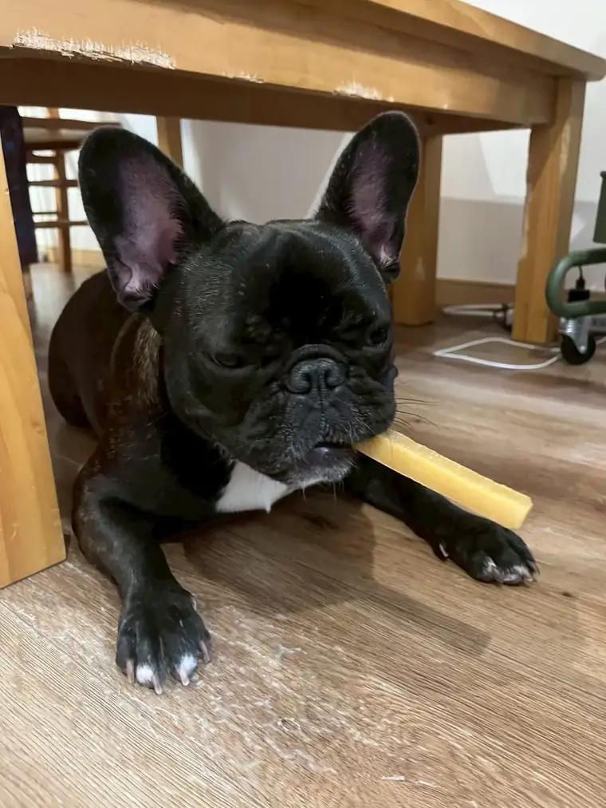
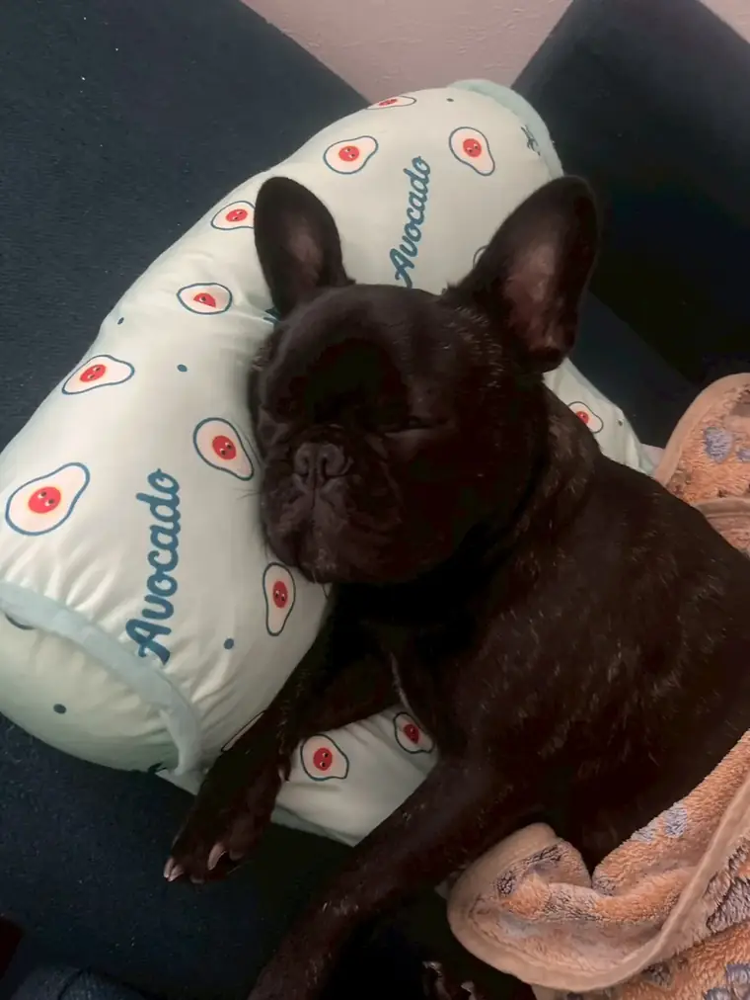

歯みがき、
はじめよう
少しずつ、なれていけばいい ・ 2026年11月

こまより
なんでも食べるのが、わたしの特技。だから、歯はとってもだいじ。でも、口の中をさわられるのって、ちょっとドキドキするよね。いきなり歯ブラシじゃなくて、少しずつ慣れていけばいいんだって。
犬の歯みがきが、大切なわけ
犬の歯についた歯垢は、やがてかたい歯石になり、歯ぐきの炎症（歯周病）につながります。3歳以上の犬の多くに歯周病があるともいわれ、ほうっておくと痛みや歯がぬける原因に。
歯周病は、毎日の歯みがきでかなり防ぐことができます。
理想
毎日
少なくとも
週に
3回
人用の歯みがき粉は、使わない
人用の歯みがき粉は、飲みこむことを前提に作られていません。中にはキシリトールのように、犬にとって毒になる成分が入っているものも。かならず犬用の歯みがき粉を使いましょう。お肉味など、犬が好きな味のものがあります。
慣れるための、6つのステップ
1日でぜんぶやらなくて大丈夫。数日〜数週間かけて、少しずつ進めます。
- 静かな時間に、口のまわりをさわる。だっこやとなりに座った、リラックスした時間に。
- 指で、歯の外側をなでる。歯と歯ぐきのさかいめを、指やガーゼでやさしく。
- 犬用の歯みがき粉を、味見させる。指につけてなめさせ、「おいしいもの」だと覚えてもらいます。
- ガーゼに歯みがき粉をつけて、こする。まずは数本だけでOK。
- 歯ブラシにステップアップ。指にはめるタイプの歯ブラシが始めやすいです。
- 奥歯と犬歯から、外側を中心に。くちびるをそっと持ち上げて。片側30秒くらいが目安。終わったら、たっぷりほめて。

ごろん。
こんなときは、動物病院に相談
- 口のにおいが強い／歯が茶色や黄色くなっている（歯石）
- 歯ぐきが赤い・はれている・血が出る
- かたいものを食べにくそう、片側だけでかむ
ついてしまった歯石は、歯みがきでは取れません。動物病院でのケアについては、かかりつけの先生に相談してね。
だいじなおやくそく。この記事は一般的な情報です。わんちゃんの体や性格はそれぞれちがうので、気になることは、かかりつけの動物病院に相談してね。